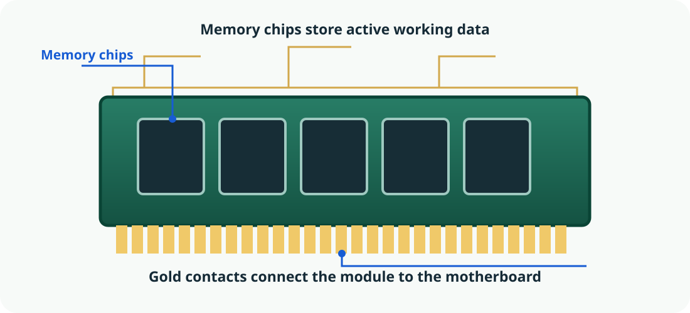
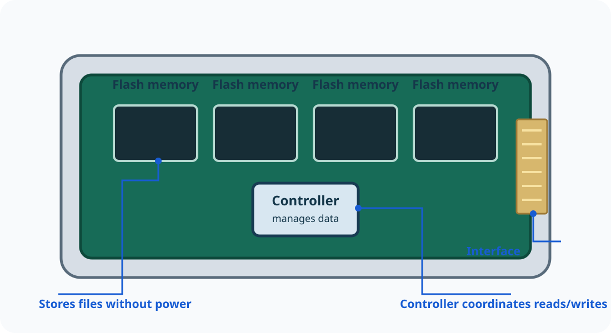

Registers: hold tiny amounts of data needed immediately.
⚡

RAM / रैम (अस्थायी मेमोरी)
Working memory
Holds programs and data currently in use. It is volatile: its contents are normally lost when power is removed.
यह वर्तमान में उपयोग हो रहे प्रोग्राम और डेटा को रखती है। यह अस्थायी (volatile) मेमोरी है; बिजली बंद होने पर इसकी सामग्री सामान्यतः मिट जाती है।
🔒
ROM / firmware memory / ROM / फ़र्मवेयर मेमोरी
Startup instructions
Non-volatile memory retains essential instructions. Modern devices may store firmware in rewritable flash memory.
नॉन-वोलेटाइल मेमोरी आवश्यक निर्देश सुरक्षित रखती है। आधुनिक उपकरणों में फ़र्मवेयर को दोबारा लिखी जा सकने वाली फ्लैश मेमोरी में रखा जा सकता है।
💾

SSD / HDD / SSD / HDD (स्थायी स्टोरेज)
Long-term storage
Keeps documents, photos, applications and other files when the computer is switched off.
कंप्यूटर बंद होने पर भी दस्तावेज़, फ़ोटो, एप्लिकेशन और अन्य फ़ाइलें सुरक्षित रखती है।
🗂️
RAM is like a work desk
Keep the files and tools you are using right now within reach.
🗄️
SSD / HDD is like a filing cabinet
Save work so you can return to it later, even after leaving the desk.
Memory and storage at a glance / मेमोरी और स्टोरेज एक नज़र में
Type
Main job
Usually keeps data without power?
Easy way to remember
Registers
Immediate CPU values
No
Smallest and extremely fast
Cache
Frequently needed data near the CPU
No
Fast helper for the CPU
RAM
Active programs and data
No
Working space
ROM / firmware memory
Essential device instructions
Yes
Startup instructions
SSD / HDD
Files and applications
Yes
Long-term filing
Common confusion: RAM and storage both hold data, but they have different jobs. RAM supports current work; an SSD or HDD keeps saved files for later.
🎬 Watch and explore: the CPU instruction cycle / CPU निर्देश चक्र देखें और समझें
Meet the four learning buddies in a narrated story, then control the instruction cycle yourself. Choose English or Hindi using the lesson language switch.
INTERACTIVE ANIMATION · 4 STEPS
Run one instruction through the CPU
एक निर्देश को CPU के चार चरणों से गुजारें।
INSTRUCTION 01
📚MAIN MEMORYADD 7, 5
➜
🧠CPU
Control UnitALURegisters
ADD
➜
✨RESULTWaiting…
🤖
Byte the Robot
Step 1 · Fetch
The Control Unit gets the next instruction from memory and places it where the CPU can work with it.
Control Unit मेमोरी से अगला निर्देश प्राप्त करवाती है और उसे CPU के उपयोग के लिए उपलब्ध कराती है।
Step 1 of 4 · Select Play or Next to begin.
Follow the data through a computer / कंप्यूटर में डेटा की यात्रा देखें
In a simple task, data comes in through an input device, the CPU processes it using instructions and working memory, and an output device presents the result. Storage keeps files for later.
एक सरल कार्य में डेटा इनपुट उपकरण से आता है, CPU निर्देशों और कार्यशील मेमोरी की सहायता से उसे संसाधित करता है और आउटपुट उपकरण परिणाम दिखाता है। स्टोरेज फ़ाइलों को बाद के लिए सुरक्षित रखता है।
🎞️ Watch a file move between storage, RAM and CPU / स्टोरेज, RAM और CPU के बीच फ़ाइल की यात्रा देखें
Follow a school report as it opens, changes in memory, and is saved again. The moving file marker shows where the current copy is being used. / स्कूल की रिपोर्ट को खुलते, मेमोरी में बदलते और फिर सेव होते देखें। चलता हुआ संकेत बताता है कि वर्तमान कॉपी कहाँ उपयोग हो रही है।
💾SSD / HDDSaved file
⚡RAMWorking copy
🧠CPUInstructions
⚡RAMEdited data
💾SSD / HDDSaved update
📄
STEP 1 OF 5
Open the saved report
The report exists on the SSD or hard disk. When you open it, the operating system requests the file from storage.
रिपोर्ट SSD या हार्ड डिस्क में सुरक्षित है। खोलने पर ऑपरेटिंग सिस्टम स्टोरेज से फ़ाइल माँगता है।
The file is safe on storage. / फ़ाइल स्टोरेज में सुरक्षित है।
Zoom in on real components / वास्तविक घटकों को बड़ा करके देखें
These simplified illustrations show common computer components. Select an image to enlarge it and inspect its details.
ये चित्र सीखने के लिए बनाए गए सरल आरेख हैं। चित्र चुनकर उसे बड़ा करें और विवरण देखें।
Motherboard
Connects the CPU, memory, storage and other components.
Inside the CPU
The CU coordinates; the ALU calculates and compares; registers hold immediate values.
CU कार्यों का समन्वय करता है; ALU गणना और तुलना करता है; रजिस्टर तुरंत उपयोग होने वाले मान रखते हैं।
RAM module
Temporary working space for active programs and data.
Inside an SSD
Flash memory keeps saved files without power; a controller manages reads and writes.
🧠 Explore the parts that work together / 🧠 साथ काम करने वाले भागों का अन्वेषण करें
A computer is not a single “thinking box”. Different components perform different jobs and exchange data.
कंप्यूटर कोई एक “सोचने वाला डिब्बा” नहीं है। अलग-अलग भाग अलग काम करते हैं और डेटा का आदान-प्रदान करते हैं। किसी भाग को चुनकर उसका काम, इनपुट और आउटपुट समझें।
PROCESSING
Central Processing Unit (CPU) / प्रोसेसिंग
The CPU executes program instructions. It repeatedly fetches instructions, interprets what they mean, and carries out the required operation.
CPU प्रोग्राम के निर्देश चलाता है। यह निर्देश प्राप्त करता है, उनका अर्थ समझता है और आवश्यक कार्य करता है।
Receives / प्राप्त करता हैInstructions and data from memory
Does / कार्यCoordinates and executes operations
Produces / देता हैResults and control signals
Important distinction: RAM is the computer’s active workspace; an SSD or HDD is long-term storage. Saving a file copies it to persistent storage—it does not make the CPU a storage device.
महत्वपूर्ण अंतर: RAM वर्तमान काम की जगह है; SSD या HDD लंबे समय तक फ़ाइलें सुरक्षित रखते हैं। फ़ाइल सेव करने का अर्थ है उसे स्थायी स्टोरेज में सुरक्षित करना, CPU में रखना नहीं है।
🧠 Inside the CPU: the fetch–decode–execute cycle / CPU के अंदर: फ़ेच–डिकोड–एक्ज़ीक्यूट चक्र
The CPU processes instructions through a repeating cycle. It fetches an instruction from memory, decodes what operation is required, and executes it. The result may be stored in a register or memory, or used by the next instruction.
CPU निर्देशों को बार-बार चलने वाले चक्र से संसाधित करता है। यह मेमोरी से निर्देश प्राप्त करता है, उसका अर्थ समझता है और कार्य करता है। परिणाम रजिस्टर या मेमोरी में रखा जा सकता है।
Try the interactive CPU cycle / इंटरैक्टिव CPU चक्र चलाएँ
Step through memory, CPU registers and the three instruction stages. Use the controls to run, pause and inspect each stage.
मेमोरी, CPU रजिस्टर और निर्देश के तीन चरणों को क्रम से देखें। प्रत्येक चरण को चलाने, रोकने और समझने के लिए नियंत्रण उपयोग करें।
🔬 Compare the components by their job / कार्य के अनुसार घटकों की तुलना
Component
Main job
Does it keep data without power?
CPU
Executes instructions
Not its purpose
RAM
Fast temporary working memory
No, normally volatile
ROM / firmware memory
Retains startup/firmware instructions
Yes, non-volatile
SSD / HDD
Long-term file and application storage
Yes
CPU निर्देश चलाता है, RAM अस्थायी कार्यशील डेटा रखती है, ROM/फर्मवेयर मेमोरी आवश्यक निर्देश सुरक्षित रखती है और SSD/HDD फ़ाइलें लंबे समय तक सेव करते हैं।
Think like a technician
A computer switches off unexpectedly. Unsaved work in RAM may be lost, but a file saved earlier on an SSD normally remains. This is why students should save work regularly and keep backups of important files.
कंप्यूटर अचानक बंद हो जाए तो RAM में मौजूद बिना सेव किया काम खो सकता है, लेकिन SSD में पहले से सेव फ़ाइल सामान्यतः सुरक्षित रहती है। इसलिए नियमित सेव और बैकअप करें।
🧰 Real-world project: Inspect a computer safely / वास्तविक अभ्यास
Scenario / परिस्थिति
Compare CPU, installed RAM and storage on two school computers. Explain why a fast processor does not guarantee good performance if memory is nearly full. Never open a powered computer or touch internal components.
Tools you can use / उपयोगी टूल
On Windows use Settings → System → About and Task Manager → Performance. On Linux use Settings → About and the system monitor. Record only component information; do not record serial numbers or personal identifiers.
टूल को शिक्षक की अनुमति से उपयोग करें। अभ्यास के लिए काल्पनिक डेटा लें, निजी जानकारी साझा न करें और अपना काम सेव करने के बाद दोबारा खोलकर जाँचें।
Expected result / अपेक्षित परिणाम
A comparison table: component, observed information, job and limitation.
Access note: Built-in system tools are free and offline; menu names vary.
🎞️ Explore it in motion: Fetch → Write back / एनिमेटेड अभ्यास
The CPU repeatedly fetches, decodes and executes instructions.
CPU बार-बार निर्देश प्राप्त, समझ और निष्पादित करता है।
▣Fetch
⚙Decode
▤Execute
✓Write back
Step 1 of 4
Fetch
The control unit gets the next instruction from memory.
कंट्रोल यूनिट मेमोरी से अगला निर्देश लाती है।
Watch how each stage depends on the one before it. Select a step to inspect its role.
Learning tip: pause at each stage and explain what enters, what changes and what leaves. / हर चरण पर रुककर बताएँ—क्या आया, क्या बदला और क्या निकला।
🧪 Hands-on lab: CPU arithmetic trace / स्वयं करके सीखें
Change two numbers and step through fetch, decode, execute and write-back.
दो संख्याएँ बदलें और CPU के चार चरणों को देखें।
Instruction12 + 7
Register result19
1/4 Fetch: the next instruction is read.
🧭 Guided tool walkthrough: Inspect system information safely / टूल का चरण-दर-चरण अभ्यास
Offline and safety: No internet is needed. Menu names vary by operating-system version; teacher demonstration is acceptable.
अपेक्षित परिणाम: A table with component name, role and one observed fact.
सुरक्षा/ऑफ़लाइन: No internet is needed. Menu names vary by operating-system version; teacher demonstration is acceptable.
🧠 Check your understanding: Inside the computer / अपनी समझ जाँचें
Attempt each question before opening its model answer. Explain your reasoning in your own words; these are practice questions, not an official examination pattern. पहले स्वयं उत्तर सोचें, फिर मॉडल उत्तर खोलें। ये अभ्यास प्रश्न हैं, आधिकारिक परीक्षा-पैटर्न नहीं।
1. Put the CPU instruction cycle in the correct order. / उत्तर देखने के लिए खोलें
Model answer: Fetch the instruction, decode it, execute the operation and write back/store the result. Some processors overlap stages, but this is the basic teaching model.
उत्तर: निर्देश प्राप्त करना (Fetch), उसका अर्थ समझना (Decode), कार्य करना (Execute) और परिणाम लिखना/सहेजना (Write back/Store)। कुछ प्रोसेसर चरणों को साथ चला सकते हैं, लेकिन यह मूल शिक्षण मॉडल है।
2. What is the role of RAM while a program is running? / उत्तर देखने के लिए खोलें
Model answer: RAM temporarily holds program instructions and data currently in use so the CPU can access them quickly. It is volatile.
उत्तर: RAM चल रहे प्रोग्राम के निर्देश और वर्तमान में उपयोग हो रहे डेटा को अस्थायी रूप से रखती है ताकि CPU उन्हें जल्दी प्राप्त कर सके। यह volatile मेमोरी है।
3. How does the Control Unit differ from the ALU? / उत्तर देखने के लिए खोलें
Model answer: The Control Unit coordinates instruction execution and signals; the ALU performs arithmetic and logical operations.
उत्तर: Control Unit निर्देश चलाने और नियंत्रण संकेतों का समन्वय करती है; ALU गणितीय और तार्किक कार्य करता है।
4. Why does a computer need secondary storage if it has RAM? / उत्तर देखने के लिए खोलें
Model answer: RAM is temporary and volatile; secondary storage keeps files and programs when power is off.
उत्तर: RAM अस्थायी और volatile होती है; secondary storage बिजली बंद होने पर भी फ़ाइलें और प्रोग्राम सुरक्षित रखती है।
5. Why must a learner not open a computer power supply to inspect components? / उत्तर देखने के लिए खोलें
Model answer: It can retain dangerous electrical charge and exposes the learner to electrical and physical hazards. Use software tools or supervised demonstrations.
उत्तर: पावर सप्लाई में खतरनाक विद्युत आवेश रह सकता है और बिजली या शारीरिक चोट का जोखिम होता है। सॉफ्टवेयर टूल या शिक्षक की देखरेख में प्रदर्शन का उपयोग करें।
Practical self-check / व्यावहारिक स्व-मूल्यांकन
My output is accurate and complete. / मेरा कार्य सही और पूरा है।
I can explain why I selected this tool or method. / मैं चुने गए टूल या विधि का कारण बता सकता/सकती हूँ।
I checked errors, safety and privacy before sharing. / साझा करने से पहले त्रुटि, सुरक्षा और गोपनीयता जाँची।
I can identify one improvement for my next attempt. / अगले प्रयास के लिए एक सुधार बता सकता/सकती हूँ।
📒 Study & Copy / कॉपी में लिखने योग्य नोट्स
Short bilingual notes for your notebook. / कॉपी में लिखने के लिए छोटे द्विभाषी नोट्स।
4. Hardware and software / हार्डवेयर और सॉफ्टवेयर
Hardware runs instructions supplied by software / हार्डवेयर, सॉफ्टवेयर के निर्देशों पर काम करता है।
Hardware means the physical parts of a computer, such as the keyboard, monitor, CPU and storage drive. Software means programs and instructions that tell the hardware what to do.
हार्डवेयर कंप्यूटर के भौतिक भाग हैं, जैसे कीबोर्ड, मॉनिटर, CPU और स्टोरेज ड्राइव। सॉफ्टवेयर प्रोग्राम और निर्देश हैं जो हार्डवेयर को बताते हैं कि क्या करना है।
5. CPU, memory and storage / CPU, मेमोरी और स्टोरेज
RAM is working memory; SSD/HDD retains saved files / RAM काम की मेमोरी है; SSD/HDD फ़ाइलें सुरक्षित रखता है।
The CPU executes instructions. The Control Unit coordinates operations, the ALU performs arithmetic and logical comparisons, and registers hold immediately needed values. RAM is volatile working memory; ROM/firmware retains startup instructions; SSD/HDD keeps files without power.
CPU निर्देश चलाता है। Control Unit कार्यों का समन्वय करती है, ALU गणना और तार्किक तुलना करता है तथा registers तुरंत आवश्यक मान रखते हैं। RAM अस्थायी कार्य-मेमोरी है; ROM/firmware स्टार्टअप निर्देश रखता है; SSD/HDD बिजली बंद होने पर भी फ़ाइलें सुरक्षित रखता है।
⚡ Quick Revision / त्वरित पुनरावृत्ति
Differentiate hardware and software.
हार्डवेयर और सॉफ्टवेयर में अंतर बताइए।
What do the CU and ALU do?
CU और ALU क्या काम करते हैं?
How is RAM different from an SSD?
RAM और SSD में क्या अंतर है?
Explain the key idea in your own words before moving to the next part. / अगले भाग पर जाने से पहले मुख्य विचार अपने शब्दों में समझाएँ।
🎯 Questions & Answers — ask your students / बच्चों से पूछने के प्रश्न
Use these as oral questions, class discussion or a quick exit ticket. / इन प्रश्नों का उपयोग मौखिक अभ्यास, चर्चा या कक्षा के अंत में करें।